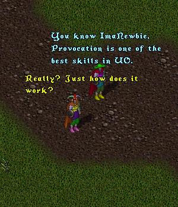
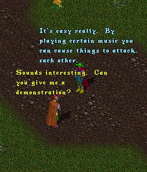
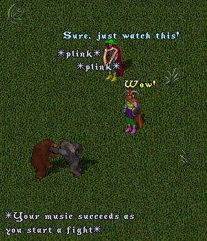
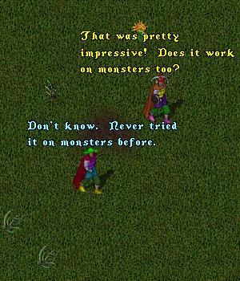
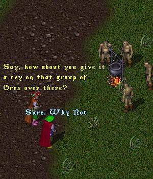
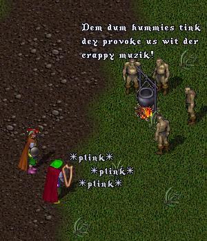
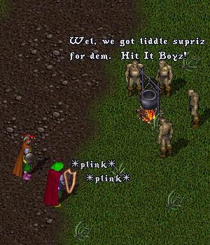
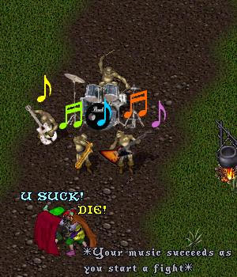
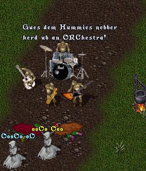

Episode 125: Battle of the bands. This week ImaNewbie discovers the wonderful world of the Bard in UO. As the episode opens we find ImaMusicMan telling ImaNewbie about how neat the Provocation skill can be.








